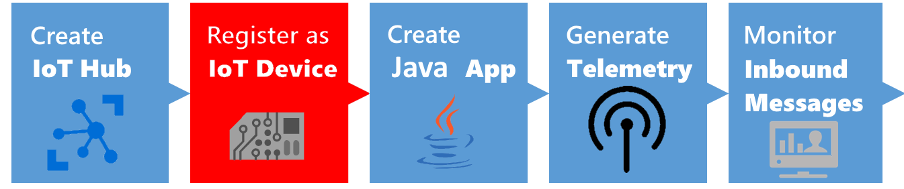
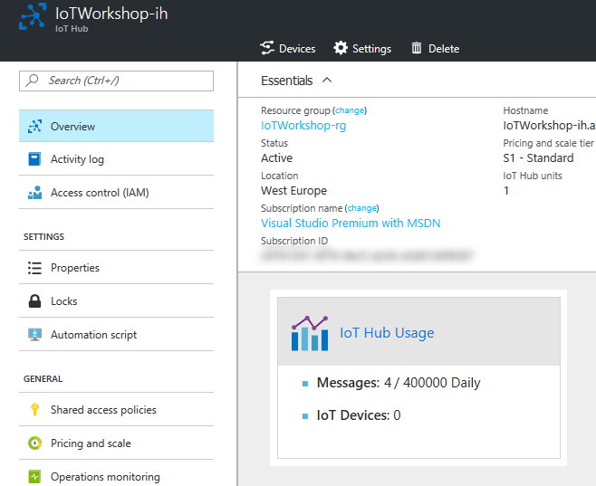

This is an example integration between a Java app and Azure IoT Hub. This integration shows features like creating devices in the Azure IoT Hub device registry as well as sending telemetry to the IoT Hub.
Note: In this workshop, we will create uniquely named Azure resources. The suggested names could be reserved already. Just try another unique name.
Note: The IoT Hub also offers the ability to send commands back to devices. This is not part of this workshop.
A Windows 7+ or Linux or Mac computer with internet access
Maven software project management (Maven 3 is recommended). Install instructions here.
Node.js. (We prefer Version 6)
Azure account create here (Azure passes will be present for those who have no Azure account (please check your email for final confirmation))
IoT Hub Explorer (for Command-Line interface based usage; see below for installation steps)
In this workshop, you will learn:
Creating an IoT Hub in the Azure Portal
Creating a new Java app
Connect to the IoT Hub by registering the app like a device
Generate and send dummy telemetry
Check the arrival of the telemetry

Follow these steps to create an Azure IoT Hub.
Log into the Azure portal. You will be asked to provide Azure credentials if needed
On the left, a number of common Azure services are shown. Select More Services to open a list with all available services

Filter it with IoT Hub

Select IoT Hub and a new blade will be shown. Select Add and you will be asked to enter the information needed to create an IoT Hub

Enter a unique IoT Hub name eg. IoTWorkshop-ih. A green sign will be shown if the name is unique
Enter a unique Resource Group eg. IoTWorkshop-rg. A green sign will be shown if the name is unique
Select West Europe for the location, if needed

Press Create and the portal will start creating the service. Once it is created, a notification is shown. In the right upper corner, a bell represents the list of all notifications shown

Creating an IoT Hub takes some time. Meanwhile, we will start with the app which will connect to the IoT Hub later on.

Unlike event hubs, all devices that use an IoT hub must be individually registered, and use their own endpoint and shared access key to access the hub. In this exercise, you will register a client device.
To register a client device, you must run a script that uses a connection with sufficient permissions to access the hub registry. In this case, you will use the built-in iothubowner shared access policy to accomplish this.
Check the Azure portal. The resource group and the IoT Hub should be created by now (otherwise, we were unable to send duty cycles information to it)

On the left, select Resource groups. A list of resource groups is shown

Select the resource group IoTWorkshop-rg. It will open a new blade with all resources in this group
Select the IoT Hub IoTWorkshop-ih. It will open a new blade with the IoT Hub

The IoTHub has not received any messages yet. Check the general settings for Shared access policies

Navigate to the 'iothubowner' policy and write down this Connection String-Primary Key

This is the secret from the IoT Hub, needed to connect our Java client and monitor it later on
Note: For more information about access control for IoT hubs, see Access control in the "Azure IoT Hub developer guide."
Each device that sends data to the IoT hub must be registered with a unique identity.
Create a new create-device-identity folder on your system.
Use the following Command at your command prompt:
console
mvn archetype:generate -DgroupId=com.mycompany.app -DartifactId=create-device-identity -DarchetypeArtifactId=maven-archetype-quickstart -DinteractiveMode=false
A maven project is created with a pom.xml file
Navigate to create-device-identity folder
Using a text editor, open the pom.xml file in the create-device-identity folder and add the following dependency to the dependencies node. This dependency enables you to use the iot-service-client package in your app:
xml
<dependency>
<groupId>com.microsoft.azure.sdk.iot</groupId>
<artifactId>iot-service-client</artifactId>
<version>1.2.17</version>
</dependency>
Save and close the pom.xml file.
Using a text editor, open the create-device-identity\src\main\java\com\mycompany\app\App.java file.
Add the following import statements to the file:
```java import com.microsoft.azure.sdk.iot.service.exceptions.IotHubException; import com.microsoft.azure.sdk.iot.service.Device; import com.microsoft.azure.sdk.iot.service.RegistryManager;
import java.io.IOException; import java.net.URISyntaxException; ```
Add the following class-level variables to the App class, replacing {yourhubconnectionstring} with the value your noted earlier:
java
private static final String connectionString = "{yourhubconnectionstring}";
private static final String deviceId = "MachineCyclesJava";
Modify the signature of the main method to include the exceptions as follows:
java
public static void main( String[] args ) throws IOException, URISyntaxException, Exception
Add the following code as the body of the main method. This code creates a device called javadevice in your IoT Hub identity registry if it doesn't already exist. It then displays the device ID and key that you need later:
```java RegistryManager registryManager = RegistryManager.createFromConnectionString(connectionString);
Device device = Device.createFromId(deviceId, null, null); try { device = registryManager.addDevice(device); } catch (IotHubException iote) { try { device = registryManager.getDevice(deviceId); } catch (IotHubException iotf) { iotf.printStackTrace(); } }
System.out.println("Device ID: " + device.getDeviceId()); System.out.println("Device key: " + device.getPrimaryKey()); ```
Save and close the App.java file.
To build the create-device-identity app using Maven, execute the following command at the command prompt in the create-device-identity folder:
console
mvn clean package -DskipTests
To run the create-device-identity app using Maven, execute the following command at the command prompt in the create-device-identity folder:
console
mvn exec:java -Dexec.mainClass="com.mycompany.app.App"
Make a note of the Device ID and Device key. You need these values later when you create an app that connects to IoT Hub as a device.
We have created a registration for a device simulation. Now let's build the actual device simulation.

Now that you have registered a client device, you can create an application that the device can use to submit data to the IoT Hub.
Now that you have registered a device, let's create the device which can submit data to the IoT hub.
Create a Maven project called simulated-device using the following command at your command prompt:
console
mvn archetype:generate -DgroupId=com.mycompany.app -DartifactId=simulated-device -DarchetypeArtifactId=maven-archetype-quickstart -DinteractiveMode=false
At your command prompt, navigate to the simulated-device folder.
Using a text editor, open the pom.xml file in the simulated-device folder and add the following dependencies to the dependencies node. This dependency enables you to use the iothub-java-client package in your app to communicate with your IoT hub and to serialize Java objects to JSON:
xml
<dependency>
<groupId>com.microsoft.azure.sdk.iot</groupId>
<artifactId>iot-device-client</artifactId>
<version>1.1.23</version>
</dependency>
<dependency>
<groupId>com.google.code.gson</groupId>
<artifactId>gson</artifactId>
<version>2.3.1</version>
</dependency>
Save and close the pom.xml file.
Using a text editor, open the simulated-device\src\main\java\com\mycompany\app\App.java file.
Add the following import statements to the file:
```java import com.microsoft.azure.sdk.iot.device.DeviceClient; import com.microsoft.azure.sdk.iot.device.IotHubClientProtocol; import com.microsoft.azure.sdk.iot.device.Message; import com.microsoft.azure.sdk.iot.device.IotHubStatusCode; import com.microsoft.azure.sdk.iot.device.IotHubEventCallback; import com.microsoft.azure.sdk.iot.device.MessageCallback; import com.microsoft.azure.sdk.iot.device.IotHubMessageResult; import com.google.gson.Gson;
import java.io.IOException; import java.net.URISyntaxException; import java.util.Random; import java.util.concurrent.Executors; import java.util.concurrent.ExecutorService; ```
Add the following class-level variables to the App class. Replacing {youriothubname} with your IoT hub name, and {yourdevicekey} with the device key value you generated in the create a device identity section:
java
private static String connString = "HostName={youriothubname}.azure-devices.net;DeviceId=MachineCyclesJava;SharedAccessKey={yourdevicekey}";
private static IotHubClientProtocol protocol = IotHubClientProtocol.MQTT;
private static String deviceId = "MachineCyclesJava";
private static DeviceClient client;
private static Integer numberOfCycles = 0;
private static Integer errorCode = 0;
Add the following nested AppMessageCallback class to the App class. This class makes it possible to receive & handle messages sent from iothub:
```java private static class AppMessageCallback implements MessageCallback { public IotHubMessageResult execute(Message msg, Object context) { System.out.println("Received message from hub: " + new String(msg.getBytes(), Message.DEFAULT_IOTHUB_MESSAGE_CHARSET));
System.out.println("Message[0]");
System.out.println(msg.getBytes()[0]);
if(msg.getBytes()[0] >= 42) {
errorCode = 0;
}
return IotHubMessageResult.COMPLETE;
}
} ```
Add the following nested TelemetryDataPoint class inside the App class to specify the telemetry data your device sends to your IoT hub::
```java private static class TelemetryDataPoint { public Integer errorCode; public Integer numberOfCycles;
public String serialize() {
Gson gson = new Gson();
return gson.toJson(this);
}
} ```
Add the following nested EventCallback class inside the App class to display the acknowledgement status that the IoT hub returns when it processes a message from the simulated device app. This method also notifies the main thread in the app when the message has been processed::
```java private static class EventCallback implements IotHubEventCallback { public void execute(IotHubStatusCode status, Object context) { System.out.println("IoT Hub responded to message with status: " + status.name());
if (context != null) {
synchronized (context) {
context.notify();
}
}
}
} ```
Add the following nested MessageSender class inside the App class. The run method in this class generates sample telemetry data to send to your IoT hub and waits for an acknowledgement before sending the next message:
```java private static class MessageSender implements Runnable { public void run() { try { while (true) { TelemetryDataPoint telemetryDataPoint = new TelemetryDataPoint(); telemetryDataPoint.errorCode = errorCode; telemetryDataPoint.numberOfCycles = numberOfCycles;
String msgStr = telemetryDataPoint.serialize();
Message msg = new Message(msgStr);
System.out.println("Sending: " + msgStr);
Object lockobj = new Object();
EventCallback callback = new EventCallback();
client.sendEventAsync(msg, callback, lockobj);
synchronized (lockobj) {
lockobj.wait();
}
if(errorCode == 0) {
numberOfCycles++;
}
if(numberOfCycles != 0 && numberOfCycles % 3 == 0) {
errorCode = 99;
}
Thread.sleep(2000);
}
} catch (InterruptedException e) {
System.out.println("Finished.");
}
}
} ```
Replace the main method with the following code that creates a thread to send device-to-cloud messages to your IoT hub:
```java public static void main( String[] args ) throws IOException, URISyntaxException { client = new DeviceClient(connString, protocol);
MessageCallback callback = new AppMessageCallback();
client.setMessageCallback(callback, null);
client.open();
MessageSender sender = new MessageSender();
ExecutorService executor = Executors.newFixedThreadPool(1);
executor.execute(sender);
System.out.println("Press ENTER to exit.");
System.in.read();
executor.shutdownNow();
client.close();
} ```
Save and close the App.java file.
To build the simulated-device app using Maven, execute the following command at the command prompt in the simulated-device folder:
console
mvn clean package -DskipTests
The simulation of a machine is now written. You are ready to send telemetry.

Now you can run the java application to send data to the IoT hub.
To run the application, execute the following command at the command prompt in the simulated-device folder:
console
mvn exec:java -Dexec.mainClass="com.mycompany.app.App"
Observe the script running as it starts to submit device readings.
Now we have sent telemetry to the IoT Hub. Let's check if it's arrived.

We can monitor the arrival of telemetry only if we have enough rights to look into the IoT Hub. We collected the IoT Hub Policy secrets already.
We can check the arrival of messages in the Azure IoT Hub. This can be done using a Command-Line tool named IoT Hub Explorer (node package).
We can check the arrival of the messages in the Azure IoT Hub using the IoT Hub Explorer. This tool is Command-Line based, please check the installation requirements.
Note : See the full example for more options of this tool.
Create a new folder eg. c:\iothubexplorer
In a dos-box (press Windows button-R, type .html and enter), navigate to the new folder c:\iothubexplorer
In this folder, run the following command npm install -g iothub-explorer@latest in your command-line environment, to install the latest (pre-release) version of the iothub-explorer tool
Login to the IoT Hub Explorer by supplying your remembered IoT Hub Connection String-primary key using the command iothub-explorer login "[your connection string]"
A session with the IoT Hub will start and it will last for approx. one hour:
.html/sh
Session started, expires on Thu Jan 05 2017 22:53:55 GMT+0100 (W. Europe Standard Time)
To monitor the device-to-cloud messages from a device, use the following command iothub-explorer monitor-events --login [your connection string] and fill in your remembered IoT Hub 'Connection String-primary key'
All devices are monitored now. This will result in the following messages (if your console / terminal is still sending messages)
```.html/sh Monitoring events from all devices... From: MachineCyclesNodeJs { "errorCode": 0, "numberOfCycles": 2 }
From: MachineCyclesNodeJs { "errorCode": 0, "numberOfCycles": 3 }
```
The cycle information is arriving.
These messages shown during the monitoring step are now available in Azure, and kept in the IotHub until other resources are asking for telemetry...
Next Step: You are now ready to process your data in an Azure Function. Continue to Receiving and handling telemetry in Azure